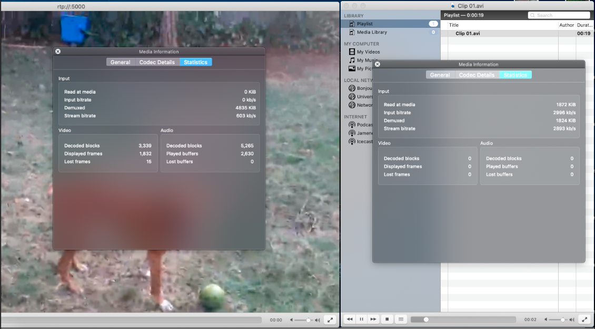

Tarea 1.1: Elige un clip de vídeo de máximo 20 segundos (puedes crearlo con tu dispositivo móvil, que tenga objetos en detalle y en movimiento) y codifícalo con Avidemux eligiendo el formato y resolución que creas adecuadas para su publicación en web. Teniendo en cuenta que no todos los navegadores aceptan todos los códecs, codifica el vídeo en los formatos necesarios para que sea compatible con el máximo de navegadores posible. Explica las decisiones tomadas en la codificación y el porqué de cada una.
Todos los navegadores tienen soporte para MPEG-4 (h264), siendo la mejor opción para este caso. Es un formato rápido de codificar y descodificar y tiene una serie de características que pueden mejorar la experiencia y en general para web y video incrustado, dado su peso se debe de hacer un balance entre peso y bitrate.
Su más fuerte competidor, o el siguiente en la lista sería WebM, con códec (VP9), sin embargo, este formato, si bien tiene soporte para los principales navegadores, no lo tiene para Internet Explorer (que igualmente este se descarta pues no soporta html5) ni Safari, reduciendo sus posibilidades de una publicación en la web de forma extensa. Esto se puede sopesar utilizando en conjunto con mp4, como se hará. Su método de codificación permite un rápido procesamiento, pues es más sencilla y una compresión buena lo cual permite pesos de archivos reducidos manteniendo una buena calidad.
En bitRate, realizando pruebas se escogió uno de 1200kb/s dado que este mantiene una buena calidad y reduce significativamente el peso. En cuanto a resoluciones, fue bastante difícil determinarla, pero se escogió una de 1200 x 780 siendo esto una resolución estándar para navegadores en computadoras
Se añadió también otro video con un bitrate de 700kb/s y resolución de 640 x 360, esto para crear un diseño responsive , de fácil carga para redes móviles. Se configura con un BitRate bajo, pues las redes móviles suelen tener menor ancho de banda u como es el caso de mi país, se consume por descarga de datos, por lo cual un video con resolución justa para la pantalla y bajo bitRate representa un menor consumo de datos y una carga rápida de la página web.
En total se generan 4 archivos de tamaños reducidos, dispuestos para generar la carga del video de la forma más eficiente y barata para el usuario. Están ordenados de tal forma que en base al tamaño de la pantalla (al abrirlo), se carga uno y otro, en cuanto a los formatos, se prefiere webM antes que Mp4, siento este último utilizado en navegadores que no soporten WebM. Se ha agregado código en javascript para hacer este efecto, pues el atributo “media” de scr, video al parecer presenta problemas para Chrome, tal y como lo experimente, indague y dicho atributo parece ya ser soportado, pero no me dio los resultados esperados.
Referencia: https://www.macxdvd.com/mac-dvd-video-converter-how-to/webm-vs-mp4.htm
Tarea 1.2 Crea la web. Genera un fichero .html mediante un editor de texto, incrústale el clip de vídeo codificado utilizando el tag "video" de HTML5 y prepara la web para que pueda ser visualizada desde la mayoría de los navegadores. ¿Qué características se pueden destacar de la publicación y visualización de un vídeo en HTML5 respecto a otros métodos de publicación?
(Presente al inicio del sitio web)
Video incrustado es el primer método de publicación creado, este método es considerado uno de los más sencillos, el video es descargado y se mantiene en la cache o directorio temporal del navegador. En cuanto al sitio web, nos convertimos en hosting de los videos, por lo que es necesario tener cuidado con el espacio, pues toman mucho.
Con Html 5 se abandona la idea de esperar a una descarga completa y la necesidad de plugins para poder visualizar el video, con formatos como MPEG4 y WEbM, se da una descarga progresiva y la visualización sucede conforme segmentos del video se han cargado; es altamente compatible con navegadores, basta con proporcionar los formatos de videos correctos (que generarlos puede consumir tiempo y espacio).
El streaming, es un método distinto de publicación donde el video es transportado en segmentos y estos se cargan desde otra locación y el protocolo que se usa es distinto al TCP, HTML5 permite el streaming como una de sus características, con el uso de MSE, pero este se vuelve difícil de configurar; fuera de HTML5, existen otras formas de streaming, donde basta con utilizar reproductores incrustados, como por ejemplo Twitch para live streaming, donde los servidores de streaming de proveedores externos se encargan de la transmisión de los mismos.
Por ultimo P2P, ofrece ventajas en cuanto a costos, pues con este método el video es compartido por varios en sus propios equipos, basta con tener un server que indique los videos disponibles, pero este método es bastante limitado, no todas las personas quieren actuar como proveedores de los videos pues consume velocidad de carga, los usuarios también se exponen a descargas indeseadas, por lo cual es un método de publicación muy limitado al contexto.
Ref: https://medium.com/canal-tech/how-video-streaming-works-on-the-web-an-introduction-7919739f7e1
https://medium.com/@andriy.lysnevych/setting-up-p2p-video-on-a-web-page-in-5-minutes-for-free-c15f1b8b7ff
Tarea 1.3 Publica el fichero .html y el vídeo en un servidor web para verla con una dirección http pública y vuelve a analizar sus características. Si no tienes ningún servidor web, puedes utilizar cualquier de los hostings gratuitos que existen en Internet.
Entendiendo esta pregunta como una validación de la 1.2, si se evidencia la presencia de las características comentadas, insertar el video en html5, fue un proceso sumamente sencillo y al querer expandir sus capacidades para hacerlo responsive, esto se logró igualmente con poco código pero bajo un aumento en peso del sitio.
Se da un carga del video de forma progresiva conforme se descarga, lo cual se probo usando el dev tools configurándolo para usar un Slow 3G.
Video siendo reproducido mientras se cargan los demas segmentos del video.
Tarea 2.1: Genera un clip de vídeo de calidad HD de unos 20 segundos de duración (o descárgalo de la web) que posea movimiento (algo equivalente al clip de futbol que hemos usado de ejemplo). Seguramente no será Flash Video, conviértelo mediante Avidemux y denomínalo clip01. La codificación de salida es FLV1 (flash) y en VIDEO OUTPUT-CONFIGURACION selecciona como modo de codificación DOS PASADAS-BITRATE MEDIO (para mantener la calidad) y 5000 Kbps. Como formato de audio, MP3(lame) y como contenedor, AVI. Incluye estos clips en la entrega de la práctica.
Enviados por weTransfer.
Tarea 2.2: Configura una emisión repetitiva y una recepción del clip01 con los mismos valores utilizados en el clip de fútbol. En el VLC de emisión, menú HERRAMIENTAS INFORMACIÓN DEL CÓDEC-CÓDEC (en Mac: VENTANA-INFORMACIÓN MULTIMEDIA DETALLES DEL CÓDEC), indica los códecs con los cuales dice que se generó el fichero almacenado. En ESTADÍSTICAS indica la TASA DE BITS DE CONTENIDO que está leyendo de disco, es la necesaria para una reproducción correcta del contenido (es un valor cambiante, de forma que toma un valor mediano aproximado).
La tasa de bits de contenido ronda los 4000kbps – 6000kbps. Este dato concuerda a las configuraciones que establecimos al codificar el video en la tarea 2.1 para que pudiera ser reproducido en streaming, donde en modo de codificación marcamos tasa de bits media: 5000kbps, por lo que los datos mostrados en estadísticas lo corroboran.
Tarea 2.3: En el VLC de recepción, mediante HERRAMIENTAS-INFORMACION DEL CODEC-CÓDEC (en Mac: VENTANA-INFORMACIÓN MULTIMEDIA-DETALLES DEL CÓDEC) confirma que el stream está codificado en los formatos de vídeo y audio seleccionados. En ESTADÍSTICAS indica la TASA DE BITS DE CONTENIDO a la cual está llegando el stream (toma un valor medio aproximado).
La tasa de bits de contenido que llega al stream ronda los 1500 kbps, se investigó y este valor es quizás poco para la calidad, pero el stream se ve correctamente, con una resolución de 1280x720 (720p).
Una menor tasa de bits de contenido, hace que el stream sea fluido (debido a que se vuelve más ligero) sacrificando calidad, pero esta no se percibe.
Referencia: https://blog.mobcrush.com/how-to-choose-the-right-bitrate-for-your-stream-9864ce322a9b
Tarea 2.4: si realizas una pausa en el VLC emisor, ¿cuántos según tarda en pausarse el vídeo en el receptor? ¿Por qué? Vuélvelo a poner en reproducción.
Tarda alrededor de 3 segundos en reaccionar. Cuando se hace una transmisión se da latencia, y eso crea un retraso en la transmisión, pues los datos tardan en llegar del emisor al receptor. En una transmisión por internet, el ancho de banda, y la distancia que crea la latencia va a determinar en buena parte el comportamiento, en este ejercicio dependerá en gran parte en la computadora y sus recursos, para codificar y decodificar. En mi caso esos tres segundos es lo que tardan en llegar al VLC receptor los últimos datos enviados por el VLC emisor antes de la pausa.
Tarea 2.5: Calcula aproximadamente la compresión que el VLC de emisión está realizando al transcodificar el fichero almacenado a stream en formato H.264. Realiza una captura de pantalla del escritorio con los dos VLC en marcha y sus ventanas con las estadísticas de cada uno abiertas, e inserta la captura en el documento en el cual escribes las respuestas de esta práctica.
Factor de compresión = Flujo de datos sin comprimir (bps) / Flujo de datos comprimido (bps). En este ejercicio el flujo de datos sin comprimir sería los bps del VLC emisor, tras la transcodificación, el flujo de datos comprimidos sería el VLC receptor.
En la captura podemos ver que el VLC emisor tiene un kbps de 3797, mientras que el VLC receptor, 1194 kbps. El flujo de datos del VLC emisor es tomado como sin comprimir debido a que activamos la opción de transcodificar, por lo que el VLC receptor obtendrá datos comprimidos por el reproductor. En nuestro video sería: Factor de compresión = 3,797,000 bps / 1,194,000 bps = 3.1721
Tarea 2.7: Vuelve a seleccionar el contenedor que teníamos (H.264+Mp3), modifica la velocidad de vídeo a 2000 kbps, 500 kbps y 200 kbps (la de audio no la modifiques) (en Mac hay que rehacer la configuración del emisor). Haz una captura de pantalla de los dos VLC con sus ventanas de estadísticas abiertas en los tres casos y cópialas en el documento de la práctica. Al bajar la velocidad de transmisión fijada, ¿de qué manera visual se refleja la pérdida de calidad?
Se adjuntan primero images, para el posterior analisis.
200 kbps
500 kbps

2000 kbps
Comparativa visual de 200 kbps a 2000 kbps, perdida de calidad notable:
Cuando se habla de bit rate, se está hablando del flujo de datos, o la cantidad de datos que se están reproduciendo. Un bajo bit rate significa una disminución de datos que recibe el reproductor de video, es decir, menos pixeles, y por ende menor calidad de video. Un alto bit rate transmitiría más información (más pixeles) y el video no tendría ese efecto borroso.
Según IBM en su página dedicada a los medios digitales, el kbps durante una transmisión debe mantenerse alrededor de los 1500 kbps a los 4000 kbps, por lo que reducir la velocidad de transmisión va a afectar significativamente la calidad visual del streaming.
En este ejercicio se propone modificar el bit rate a 2000 kbps, 500 kbps y 200 kbps. En cada transmisión con su bit rate respectivo se nota a simple vista la variación de la calidad. En la transmisión con 2000 kbps se nota una transmisión con bastante calidad y fluidez. A 500 kbps ya se nota una disminución de la calidad, debido al reducido bit rate. A 200 kbps el video se ve con una calidad sumamente inferior, los datos que llegan son insuficientes para una calidad de streaming aceptable. Esto demuestra que el bit rate puede ser más determinante incluso que la resolución del video a la hora de hacer streaming, pues un video de calidad media con un bit rate alto puede visualizarse mejor que un video de calidad alta con bit rate bajo.
2.8: Estando en el caso a 200 kbps, mediante la barra deslizante del VLC emisor avanza o retrocede unos minutos en la reproducción y mira cómo se comporta el VLC receptor. ¿Cuántos segundos tarda en reaccionar y por qué no reacciona de manera inmediata? Al hacerlo, ¿qué pasa con la imagen y cómo se relaciona con la estructura GOP de H.264/AVC y sus fotogramas I, B y P?
El VLC receptor tarda aproximadamente 1 segundo en reaccionar, esta acción no puede realizarse de forma inmediata debido a la latencia que hay entre el receptor y el emisor. En un ejercicio anterior se indicó pausar el video y registrar cuanto tardaba en ocurrir; Ocurrió al cabo de 3 segundos, la diferencia con este ejercicio es la tasa de bits de cada video, al ser menor en este, hay menos latencia y consumo de recursos (por el peso del archivo) y, por ende, ocurrió más rápidamente.
El video original está configurado para tener un GOP = 30, el video se reproduce a 30 frames por segundo, con un GOP de 30 habría un fotograma I en el primer fotograma de cada segundo, de esta forma se puede avanzar o retroceder en cualquier punto del video sin que se vea afectada la calidad en estos saltos, en especial con videos similares al utilizado para el ejercicio, ya que poseen mucho movimiento y esto dificulta mantener la calidad en cada fotograma. Si se llegará a tener un GOP inferior a 30, podría generar una mayor latencia debido a que las imágenes estarían menos comprimidas, y un GOP superior a 30 limitaría cuanto se puede avanzar o retroceder en la transmisión, con la ventaja de que sería más fluido.
Al grabar un video en movimiento es normal que durante movimientos bruscos se pierda calidad, esto porque los fotogramas P utilizan la información del fotograma anterior para generar las diferencias en su fotograma, en vez de utilizar una imagen completa como los fotogramas I; Debido a esto son más ligeros. En un video con movimiento, los fotogramas P no pueden utilizar toda la información que obtendrían del fotograma anterior, generando así la pérdida de calidad.